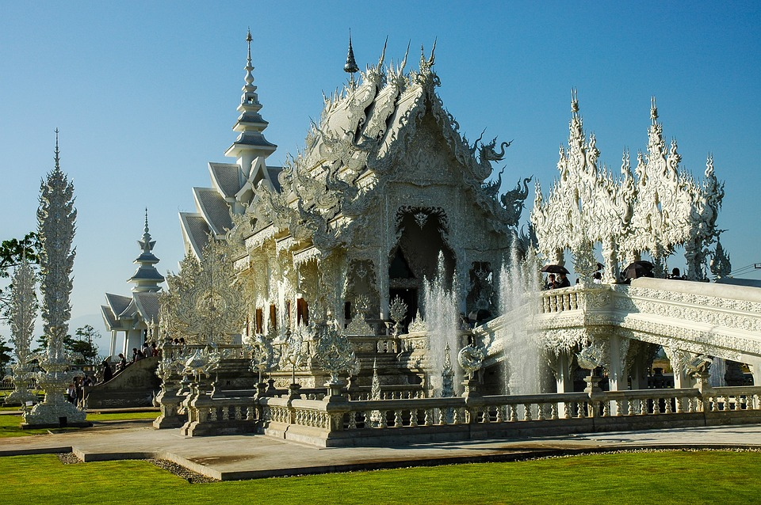
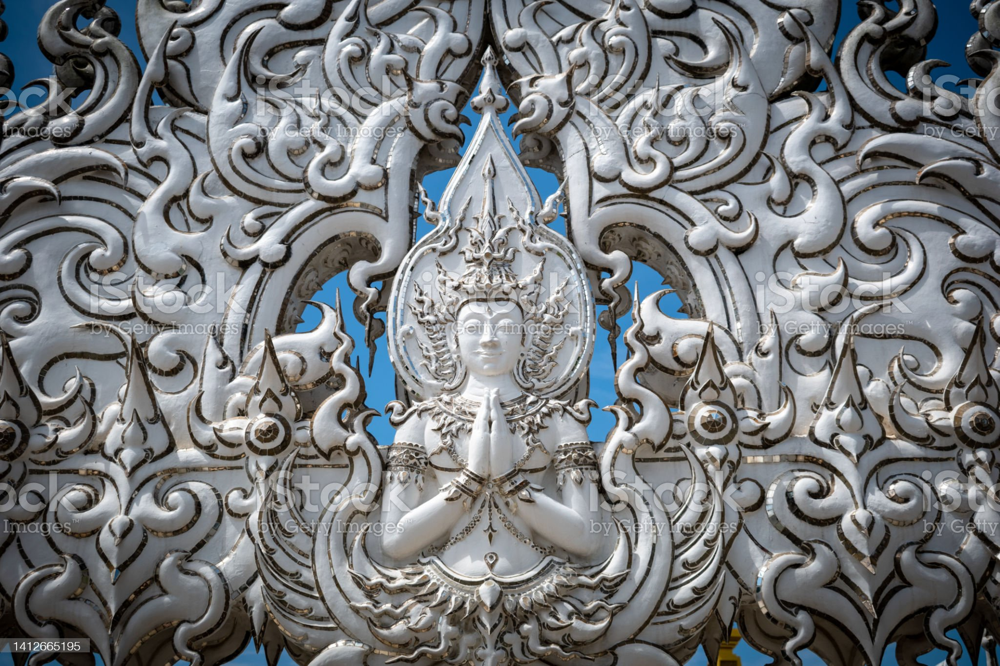

วัดร่องขุ่น วัดสีขาวสุดอลังการ มาเที่ยวเชียงรายห้ามพลาด
วัดร่องขุ่น เป็นวัดที่มีความงดงามและมีเอกลักษณ์โดดเด่นที่สุดแห่งหนึ่งในประเทศไทย เป็นที่เที่ยวเชียงรายที่ทำให้ตื่นตาตื่นใจไปกับงานศิลปะสุดวิจิตรอลังการที่สร้างสรรค์โดยอาจารย์เฉลิมชัย โฆษิตพิพัฒน์ จิตรกรชาวเชียงรายผู้เป็นศิลปินแห่งชาติสาขาทัศนศิลป์ โดยมีปณิธานมุ่งมั่นที่จะสร้างงานพุทธศิลป์ที่มีเอกลักษณ์เฉพาะตัวเพื่อประกาศความยิ่งใหญ่ของประเทศไทยไปสู่สายตาชาวโลก และเพื่อสร้างศิลปะประจำรัชกาลที่ 9 แต่เดิมวัดร่องขุ่นเป็นวัดเก่าในชุมชนที่มีสภาพทรุดโทรมไปตามกาลเวลา จากนั้นในปี พ.ศ. 2540 อาจารย์เฉลิมชัยจึงได้เริ่มออกแบบวัดแห่งนี้ขึ้นใหม่ โดยใช้เวลาสร้างถึง 13 ปี วัดร่องขุ่นแห่งนี้ได้กลายเป็นผลงานศิลปะที่ยิ่งใหญ่และทรงคุณค่า จนกลายเป็นที่เที่ยวเชียงรายมีชื่อเสียงไปทั่วโลกและเป็นที่รู้จักในนาม “White Temple” หรือ “วัดขาว”
 